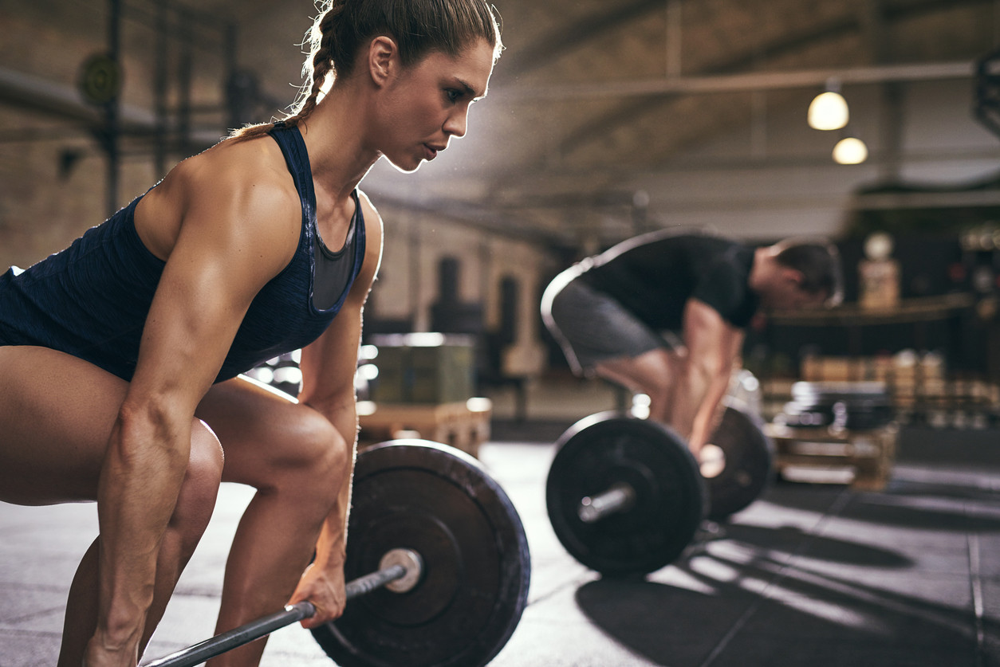

Unidad 1: Ejercicios de Respiración

Técnicas de Respiración
Respiración diafragmática: Focaliza en la expansión del abdomen; mejora la capacidad pulmonar.
Respiración costal: Utiliza el movimiento de las costillas; útil para actividades aeróbicas.
Ejercicios Prácticos
Ejercicio 1: Inspirar profundamente por la nariz, retener y exhalar lentamente por la boca.
Ejercicio 2: Respiración alternada; tapa una fosa nasal e inhala por la otra.
Unidad 2: Ejercicios de Musculación

Importancia
Desarrolla fuerza muscular, mejora la resistencia y promueve la salud ósea.
Ejercicios Comunes
Sentadillas: Fortalecen piernas y glúteos.
Flexiones: Trabajan pecho, hombros y tríceps.
Levantamiento de pesas: Aumenta la masa muscular en diversas áreas.
Unidad 3: Ejercicios de Aeróbica

Beneficios
Mejora la salud cardiovascular, aumenta la resistencia y quema calorías.
Tipos de Ejercicios
Correr: Ejercicio de bajo impacto; se puede realizar al aire libre o en cinta.
Ciclismo: Ejercicio aeróbico excelente para fortalecer las piernas.
Clases de aeróbica: Combinación de movimientos rítmicos y música.
Unidad 4: Ejercicios con Mancuernas
Beneficios
Fortalecen músculos, mejoran la coordinación y aumentan la densidad ósea.
Ejercicios Comunes
Press de banca: Trabaja el pecho y tríceps.
Remo con mancuerna: Fortalece la espalda y bíceps.
Elevaciones laterales: Mejora la definición de los hombros.
Unidad 5: Correcta Alimentación
Importancia de la Nutrición
Proporciona la energía necesaria para el ejercicio y la recuperación muscular.
Macronutrientes
Carbohidratos: Principal fuente de energía.
Proteínas: Esenciales para la reparación y crecimiento muscular.
Grasas saludables: Importantes para funciones corporales y absorción de vitaminas.
Unidad 6: Correcta Posturación
Importancia de la Postura
Previene lesiones y mejora el rendimiento durante el ejercicio.
Consejos para Mantener una Buena Postura
Ejercicio: Mantener la alineación de la columna y el cuello.
Ergonomía: Ajustar el espacio de trabajo y las herramientas adecuadamente.
Unidad 7: Ejercicio con Piernas
Ejercicios Clave
Sentadillas: Fortalecen muslos y glúteos.
Elevaciones de talones: Mejoran los gemelos y la estabilidad.
Zancadas: Trabajan los músculos de las piernas de manera equilibrada.
Unidad 8: Ejercicio con Saltos
Beneficios de los Saltos
Mejoran la explosividad, la fuerza y la coordinación.
Ejercicios Comunes
Saltos de tijera: Aumentan la frecuencia cardiaca y trabajan piernas.
Saltos en profundidad: Fomentan la fuerza de las piernas.
Burpees: Ejercicio completo que combina fuerza y cardio.
Unidad 9: Ejercicio con Pesos Pesados
Beneficios
Aumenta la masa muscular, mejora la fuerza y el rendimiento físico.
Ejercicios Clave
Levantamiento de pesas: Mejora la fuerza general.
Sentadillas con barra: Trabajan las piernas y la espalda baja.
Press militar: Fortalece los hombros y la parte superior del cuerpo.
Unidad 10: Recomendaciones Diarias

Evitar el Sobreentrenamiento
Es crucial escuchar a tu cuerpo y no exceder los límites. El descanso es esencial para la recuperación.
Consejos para el Ejercicio Diario
Establecer un horario: Crear una rutina te ayuda a mantener la constancia.
Variar los ejercicios: Combinar diferentes tipos de entrenamiento evita el aburrimiento y trabaja diferentes grupos musculares.
Hidratación: Beber suficiente agua antes, durante y después del ejercicio.